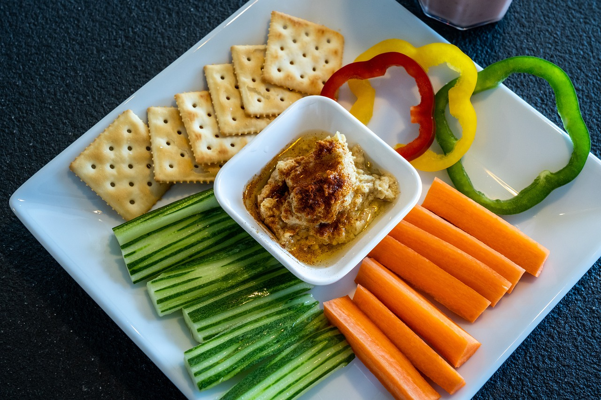

Selección Especial
| Imagen | Receta | Descripción |
|---|---|---|

|
Ensalada Mediterránea | Una ensalada fresca y saludable con ingredientes típicos de la región mediterránea. |
|  | Hummus de Garbanzos | Un delicioso y saludable dip de garbanzos, ideal para pan de pita. |

|
Tarta de Manzana | Una deliciosa tarta casera de manzana con un toque de canela. |

|
Brownies de Chocolate | Un postre irresistible para los amantes del chocolate. |

|
Té de Jengibre y Limón | Una bebida relajante y saludable con propiedades reconfortantes. |